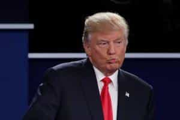
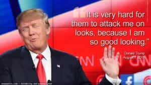
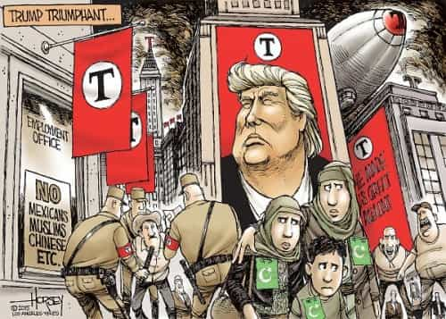
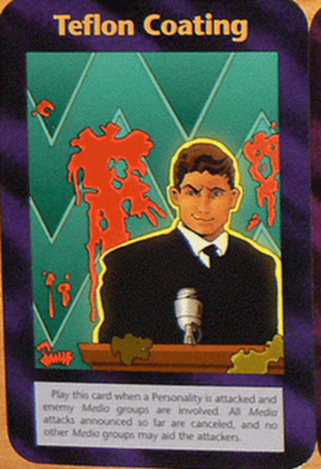
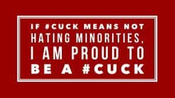

August Moliere is an IT guy using his skills to help fellow masculine men. In his free time he enjoys european culture and decries rootless cosmopolitanism.


As the election is inching slowly towards it’s end, experts are nervously scrambling to find any dirt that would stop the Trump train.
First, Megyn Kelly pulled the sexist card, then it was his undisclosed tax returns, then his comments on John McCain, then making fun of crippled reporters, then his reading of Mein Kampf, then his remarks about dating his daughter.
Then accusations of racism from former employees, his usage of eminent domain, hiring of immigrants and other questionable practices, the Trump University scandal, his blunder on abortion, old comments on drug decriminalization and gun control, his relationship with the Clintons and the DC insiders, his comments on refugees and illegal immigrants, the Khan incident. And, of course, the pussy-grabbing scandal.
Surely this time, it will sink his campaign, won’t it ? And yet each time Teflon Don deflects dirt more dexterously than ghetto trash trying escape alimony payments. Nothing seems to be able to stop him, not that his opponents will ever stop trying.
Trump has the fantastic ability to escape unharmed from what would clearly destroy any career politician. Howard Dean’s “Yee-haw” was enough to end his bid for the Democratic candidate in 2004, and yet Trump can call for an end to Muslim refugees, be accused of grabbing women by their loins, and end up being praised for it by the masses, while the mainstream media spew their bile 24/7.
What has allowed Trump to maneuver so nimbly against these accusations is the unprecedented role of internet media in elections, including being able to reach people directly through Twitter and a lack of trust in traditional media, as well as his bigger-than-life persona letting him get away with what others would be lynched for.
But that’s the story for another article. I would rather talk about something else. Particularly, is there anything that could stop him? The answer will surprise you as it goes against all conventional wisdom.
Yes, but it’s not what you think.

One of the biggest problems with defeating Trump is that unlike other politicians, political scandals not only seem to not affect him, but they even aid him. There is a saying that every anti-Trump meme is also a pro-Trump meme.

Trump has mastered political antifragility, which causes him to only strengthen when opponents try to destroy him. Trump has defeated the left’s “no platform for fascists” mentality by saying things so outrageous they have no option but to report on him.
So, the left cannot choose to not cover him and let him wallow in obscurity like they did with Ron Paul. Neither can they attack him, for each of their attacks only make him more popular.
One memorable movie quote I remember went something like this: “Every man has a weak spot. First you try to buy him with money, then women, then you go for his family, and if that doesn’t work, well, a bullet always does the job.” Unfortunately, unlike other political losers, Don does not need other people’s money, nor does he lack female attention, and his family is smart and probably safe from violence.
But this isn’t an article about (God forbid) Donald Trump getting assassinated. That would stop Trump, but not the Trump train. Trump is more than a man. Trump is an idea. He is the avatar of discontent of all those opposed to progressive ideology. He would become a martyr, thus raising the hatred for his opponents to a fever pitch which might alter America’s consciousness forever. Trump’s enemies can’t afford that.
So if ignoring Trump does not work, throwing dirt at him does not work, bribing him doesn’t work and even killing him won’t work, than what is left? The answer might surprise you.
You see Trump’s power comes from his contrarianism. He is not a candidate, he is an anti-candidate. People don’t just vote FOR Trump they vote AGAINST Hillary, Obama, Progressives and Cuckservatives. He is the wrecking ball who the injured working class and all non-liberal whites as well as minorities not completely in love in with progressive Marxist ideology want to use against the establishment.
Well, let’s ask ourselves what makes Trump popular ? His brashness, his anti-PC attitudes, his anti-elitism, his not being a part of the Establishment hacks, his being “not one of them,” his being different.
So if that is what gives Trump strength, it would make sense that to weaken him, you would have to present him as the opposite of that. To present him as being nothing special, to make him look boring and weak. To present him as just another PC-drone.
They’ve claimed nonstop that Trump is the next Hitler and that he will start building concentration camps and sexually assaulting random women by grabbing their cock pockets and will obliterate Muslims and minorities with Right WiNg Death Squad robots.

Instead they could have claimed that he is just weakling trying to act tough, and that he won’t deliver anything. That he is in love with political correctness and respects women. That he is a progressive’s best choice. That he will bring four more years of Obama.
That of course would present it’s own difficulties. In the age of online media, the monopoly of physical press has been broken. When news circulates at the speed of minutes rather than hours and days, it would be very hard for the establishment media to accomplish this. It is very hard to call Trump ordinary and boring when his statements break so many taboos.
Yet, as difficult as it may have been, at the very least it would have had a chance of success, as small as it was. Calling him sexist, racist, and other mean words did nothing to stop him, and instead only made him more popular with the masses. Some of these incidents have made Donald seem human and it made people trust him more. Showing his flaws had the opposite effect as intended, as those who hated him already needed no extra ammo, but those who liked him were either left indifferent, or what’s worse excited by his statements.

At worst a few moderates had doubts set in their mind, however considering what short attention span undecided voters have, his stellar performance at the second debate clearly made them forget about the statement and maybe even convinced them to focus on Bill’s sexual misdeeds instead.

This brings us to the final point of this article. Why haven’t his opponents used this against him? Have they not the brains to figure this out? Hard to believe, considering the amount of money being poured into think tanks.
No, the truth is like that the strategy was forsaken because of the side-effects it would have on their own camp. Should his opponents try to attack him as another PC drone, they would be also attacking themselves. Just like Hillary trying to paint Trump as sex offender only made it easier for Trump to point at Bill’s sexual indiscretions. As it has been said in the mighty book of Kek : “thee that dwell in glass lodgings shall not propel sedimentary formations” The Prophecy of Kek, Chapter 4 : Verse 20.
Attacking Trump for being multicultural, politically correct, weak, inefficient, or a shill would only shed light on the establishment’s own weakness.
This means that in order to draw voters away from Trump they would have to claim Trump loves multiculturalism, anti-racism, open borders, free trade, globalism and offer another candidate who would be even more extreme than him on these crucial issues.

Using this strategy against Trump, even if it was successful, would be a Pyrrhic victory for his opponents, as cuckservatives would have to acknowledge they can’t woo supporters with talks about reducing taxes and bringing back Reaganism. The truth is, the future is bleak for Reagan-Bush-Cuck wing of the GOP. Even if they were to win the election, they would lose the war.

The left has won the cultural war not just by winning elections, but by cultural meta-warfare. Instead of moderating their message in attempt to win election, they used popular culture and mass media to push liberal values to the masses, and so the right wing had no option, but do concessions, dropping people who opposed civil rights, women’s liberation and closed borders.
To put it simply, the battle was lost even before Trump came—Trump was the match that ignited the powder keg. He simply mobilized people, and said what others kept in private, but always wanted to say and now there is no turning back.
The elites cannot choose to ignore popular will and still win elections anymore. They will have to reform the GOP to account for their constituency’s desire or risk ending in the dust bin of history. There is no longer the option to charm the sheeple with talks about low taxes, open borders and the awfulness of bigotry. They will have to, at least, nominally give something back to the people to stay in power.
As one wise commenter on this site once said : “Trump may be a liar like the rest of them, but at least he is saying the right lies.”
The next thing people on the manosphere and the alt-right will have to look after will be Trump-like figures who will copy Trump’s rhetoric, but will fail to deliver any solutions. Or they will try to co-opt and redirect that anger. But for now, for the first time in more than 50 years, we are winning the culture war.
Read More: Will The #CruzSexScandal Propel Donald Trump Into The White House?